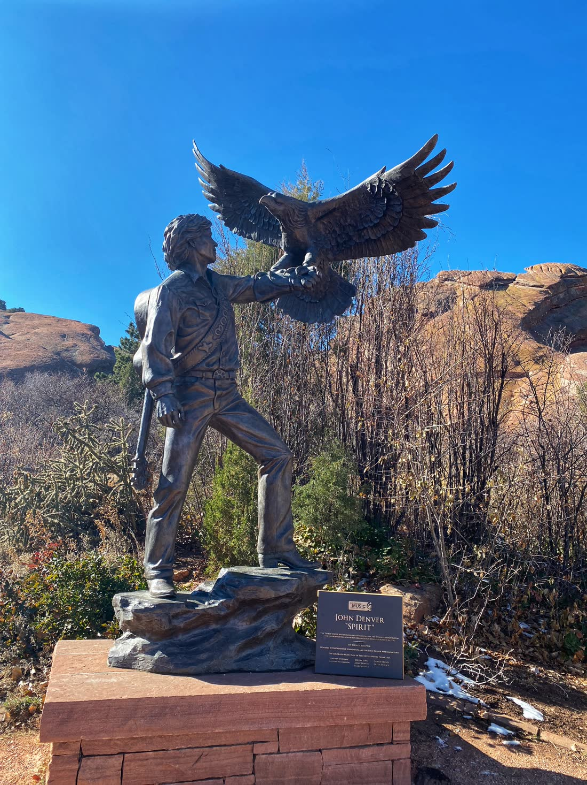

Morrison, Colorado
Spirit Statue at Red Rocks
Spirit, photographed November 13, 2020, by Lovemedead, CC BY-SA 4.0.

Spirit is the bronze of John Denver that stands outside the Red Rocks Trading Post in Morrison. Sue DiCicco made it in 2002. Fans paid for it. Rolland Smith named it Spirit and was master of ceremonies when it was unveiled at the Windstar land in Old Snowmass on October 13, 2002. It came to Red Rocks with the Colorado Music Hall of Fame and is still outside the Trading Post after the Hall moved its exhibits to the Colorado Convention Center.
Outside the Trading Post18300 W Alameda ParkwayRed Rocks Park and Amphitheatre, Morrison, CO 80465. Park hours, not a concert ticket.Hours and parking Back to Colorado
- What it is
- Bronze of John Denver, guitar on his back, eagle in the left hand. Cast at Artworks Foundry in Berkeley, California.
- Size
- 143 inches tall, about 12 feet. Eagle wingspan 75 inches. Base 54 by 32.25 inches. About 1,300 pounds.
- Artist
- Sue DiCicco, 2002. The Hall of Fame page writes the name Sue DiCiccio.
- Where
- Outside the Red Rocks Trading Post, 18300 West Alameda Parkway, Morrison, CO 80465. Pin 39.66539, -105.20572.
- Park
- Open one hour before sunrise to one hour after sunset. Free admission and parking for a park visit. Phone 720-865-2494.
Seeing it without a ticket
The bronze is outdoors, in front of the Trading Post, so you do not need a concert ticket. Red Rocks Park and its trails open one hour before sunrise and close one hour after sunset. Admission and parking are free when you are visiting the park, the amphitheatre, the visitor center, and the Trading Post. The address for the park is 18300 West Alameda Parkway, Morrison, Colorado 80465.
On a show day the venue keeps different hours. It opens one hour before sunrise and closes at about 2 p.m. The exact house closing time is not set until the week of the event, and it can change. The daily recording is 720-865-2494. If you only want the statue, a non-event morning is the simple visit. Concert parking lots open two hours before doors, and traffic control points you to a space. Cars left overnight, and not moved before 10 a.m. the next day, can be ticketed or towed. For a statue stop, use the free daytime parking and walk to the Trading Post.
The shop itself has its own clock. March through October the Trading Post is open 9 a.m. to 6 p.m. November through February it is open 9 a.m. to 5 p.m. It is closed Thanksgiving and Christmas. The visitor center is 7 a.m. to 7 p.m. from March through October and 8 a.m. to 4 p.m. from November through February. The statue is outside those doors, so you can see it during park hours even when the shop is shut.
Red Rocks Park is a Denver Mountain Park, and the trails sit around 6,280 feet. The Geologic Overlook Trail, the Trading Post Trail, the Funicular Trail, and the Mt. Vernon Creek Trail are for people on foot. The Trading Post Trail is 1.4 miles, through rock, valleys, and a meadow. Most trails are under 3 feet wide. Rock climbing is prohibited. Weather turns fast, and some stretches have drop-offs, steep grades, and road crossings. Boots help. The statue is the short walk from the Trading Post, not the 1.4-mile trail, so you can see Spirit and still have the longer walk if you want it.
The figure
Denver holds a large eagle in his left hand. A guitar is slung on his back. A gloved hand and forearm reach out, the pose a 2013 account described as an eagle landing or taking flight. The measured height of the whole bronze is 143 inches, which is just under 12 feet. The Hall of Fame calls it a 12-foot bronze. That June 21, 2013 Aspen Times story described Denver as standing 15 feet. The eagle's wingspan is 75 inches. The base is 54 by 32.25 inches. The weight is estimated at 1,300 pounds, which is why moving it was a job of its own.
Sue DiCicco made the memorial. It was cast at Artworks Foundry in Berkeley. An August 13, 2002 Aspen Times story, written before the dedication, named her as the maker and said she also cast 200 smaller bronzes of the figure, offered for sale through Windstar. Fans financed the large statue. Rolland Smith named it Spirit and hosted the unveiling. The Hall of Fame's Trading Post page writes the sculptor's name Sue DiCiccio.
Windstar, then the Trading Post
Windstar was the environmental group Denver founded in the 1970s. The land in Old Snowmass was the place the statue first stood. The Aspen Times dated the dedication October 13, 2002, five years after his death. The property is 957 acres. All but 30 acres is under a conservation easement held by Pitkin County Open Space and Trails with the Aspen Valley Land Trust. The statue sat on those 30 acres. The land was sold in early 2013, the foundation was dissolved, and the bronze was taken off the property that September and given to the Colorado Music Hall of Fame.
On November 9, 2013, John Denver's site said the Hall and the statue had found a permanent home at the Trading Post at Red Rocks Amphitheatre. Wikipedia records the move with the Hall to Red Rocks in 2015. The Hall's current page says Spirit stays outside the Trading Post even after the exhibits moved to the Colorado Convention Center in downtown Denver. You still take the selfie at Red Rocks. The Hall asks people to share those pictures with the tag JohnDenverSpirit.
Red Rocks was his stage as well as the statue's later home. He first played there in July 1972 and used that show for the first performance of Rocky Mountain High. In 1974 he was the first performer to play four nights in a row. He played the amphitheatre 17 times, the last in 1989. The 2013 announcement called it his favorite place to play. The bronze outside the Trading Post is the public figure for that history, on the sandstone the park is named for, where a daytime visitor can walk up without a ticket.
Other Colorado bronzes on this site are a different drive. Hank the Cowboy is in downtown Colorado Springs. Christ of the Rockies is the Santa Maria figure near Grant. The state list is the Colorado landmark directory.
Last verified .
Questions
How tall is the Spirit statue?
The measured height is 143 inches, about 12 feet. The eagle wingspan is 75 inches, the base is 54 by 32.25 inches, and the weight is estimated at 1,300 pounds. The Colorado Music Hall of Fame calls it a 12-foot bronze. A June 21, 2013 account described Denver as standing 15 feet.
Where is Spirit, and who made it?
Sue DiCicco made the bronze in 2002. It was cast at Artworks Foundry in Berkeley, California. Fans paid for it. Rolland Smith named it Spirit and was master of ceremonies at the Windstar unveiling in Old Snowmass on October 13, 2002. It now stands outside the Red Rocks Trading Post at 18300 West Alameda Parkway, Morrison, Colorado 80465. The Hall of Fame page writes the sculptor as Sue DiCiccio.
When can I see the statue?
Red Rocks Park and its trails open one hour before sunrise and close one hour after sunset. Admission and parking are free for a visit to the park, the amphitheatre, the visitor center, and the Trading Post. On event days the venue is open from one hour before sunrise until about 2 p.m., and that closing time can change the week of the show. Call 720-865-2494.
Sources
- Spirit (sculpture). Sue DiCicco, the 2002 bronze, the measurements, and the 2015 move to Red Rocks.
- Colorado Music Hall of Fame. The 12-foot bronze still outside the Red Rocks Trading Post.
- The Aspen Times, June 21, 2013. The October 13, 2002 Windstar dedication and the figure with the eagle.
- The Aspen Times, August 13, 2002. Sue DiCicco and the smaller bronzes.
- John Denver, November 9, 2013. The Trading Post as a home, and his Red Rocks shows.
- Red Rocks, Getting Here. Address, park hours, Trading Post hours, and parking.
- Red Rocks recreation. The Trading Post Trail and the other foot trails.